GaussView 6：高斯计算设置与提交（p.47–87）¶
Calculation Setup 各面板、Checkpoint 读取、各类任务特殊设置、Scan、提交与任务控制、执行方式
原文件：
../gview6官方说明书.md（全量单文件存档）｜图片目录：../imgs/
How To: Set up Gaussian Jobs¶
This page discusses setting up Gaussian calculations with GaussView. It deals only with the mechanics of doing so. Consult the Gaussian User’s Reference for detailed information about all Gaussian keywords and options.
The Gaussian Calculation Setup Window¶
Once the desired molecule is completed, you can use the Calculate=>Gaussian Calculation Setup menu path to open the Gaussian Calculation Setup dialog. It is illustrated below:
The Gaussian Calculation Setup Dialog
This dialog allows you to set up virtually all types of Gaussian calculations and to submit them from GaussView. The route section that GaussView is generating appears at the top of the dialog, and it is constantly updated as you make selections in the dialog’s various panels.
The dialog contains the following panels:
-
Job Type: The specified type of job appears in the top popup menu. The default is a single point energy calculation. The remaining fields in the panel represent common options for the selected job type.
-
Method: This panel specifies the quantum mechanical method to be used in a calculation. The factory default method is a ground state, closed shell Hartree-Fock calculation using the 3-21G basis set, but you can modify this with the Gaussian Setup Preferences.
-
Title: This panel holds a field used for the Gaussian title section (designed to contain a brief description of the job). Type your description into the text box.
-
Link 0: This panel is used for entering Link 0 commands for the job.
-
General: This panel allows you to select commonly used general calculation options.
-
Guess: This panel contains settings related to the initial guess. Consult the discussion of the Guess keyword in the Gaussian User’s Reference for full details on these options.
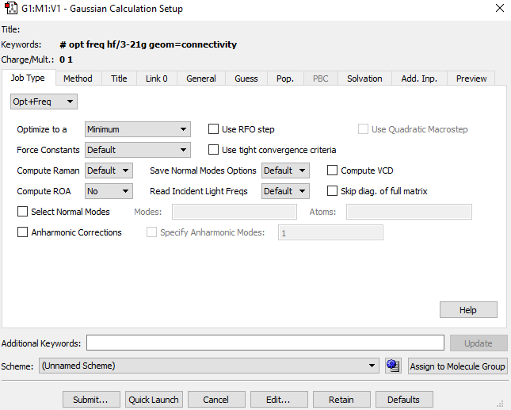
-
Pop: This panel is used to select NBO analysis at the conclusion of the Gaussian job.
-
PBC: This panel is used to specify options to the Gaussian PBC keyword.
-
Preview: Preview the generated input file.
-
Solvation: This panel allows you to specify that the calculation is to be performed in solution rather than in the gas phase.
-
Additional Input Panel: The final panel in the Gaussian Calculation Setup dialog is labeled Add. Inp. It may be used to enter any additional input section(s) required by the calculation you plan to run.
The Additional Keywords field below the panel area is used to enter any desired Gaussian keyword and/or option. Note that you must include the keyword for every option in this field even if it already appears in the route section as a result of panel item selection.
Below the panel area is the Calculation Scheme area. The controls have the following uses:
-
Scheme popup menu: Select and apply a calculation scheme.
-
(Schemes button): Open the Gaussian Calculation Schemes editor. This can also be accessed with the More Schemes selection from the Scheme menu.
-
Assign to Molecule Group: Apply the current settings to all members of the current molecule group. Saving multiple files is explained here. Submitting multiple jobs is explained here.
The buttons at the bottom of the dialog have the following effects:
-
Submit: Starts a Gaussian calculation using the current input file. You will be prompted to save the input file if you have not already done so.
-
Quick Launch: Launches a Gaussian job without further ado (more information here).
-
Cancel: Closes the dialog box and returns all selections to their default values.
-
Edit: Allows direct access to the input file with an external text editor. The input file is not available for editing until it has been saved with GaussView.
-
Retain: Closes the dialog box. Current selections are retained, but the input file is not created/updated, and no Gaussian job is submitted.
-
Defaults: Returns all items to their default values.
The Job Type Panel¶
The Job Type panel appears below.
The Job Type Panel This dialog illustrates adding an option via the Additional Keywords field.
The top dropdown menu selects the job type. The default is a single point energy calculation. The remaining fields in the panel represent common options for the selected job type.
The available job types are:
-
Energy: Performs a single point energy calculation.
-
Optimization: Performs a geometry optimization until a stationary point on the potential energy surface is found. More information...
-
Frequency: Computes Vibrational frequencies and intensities. More information...
-
Opt+Freq: Performs a geometry optimization and then analyzes frequencies.
-
IRC: Specifies that a reaction path be followed by integrating the intrinsic reaction coordinate. More information...
-
Scan: Perfoms a potential energy surface scan. More information...
-
Stability: Performs a calculation to test the stability of the Hartree-Fock or DFT wavefunction. More information...
-
NMR: Predits NMR shielding tensors and magnetic susceptibilities. More information...
-
blank: In order to select a job type other than those listed in the popup menu, select the blank menu item at the bottom of the list, and then type the appropriate Gaussian keyword into the Additional Keywords field in the lower section of the dialog.
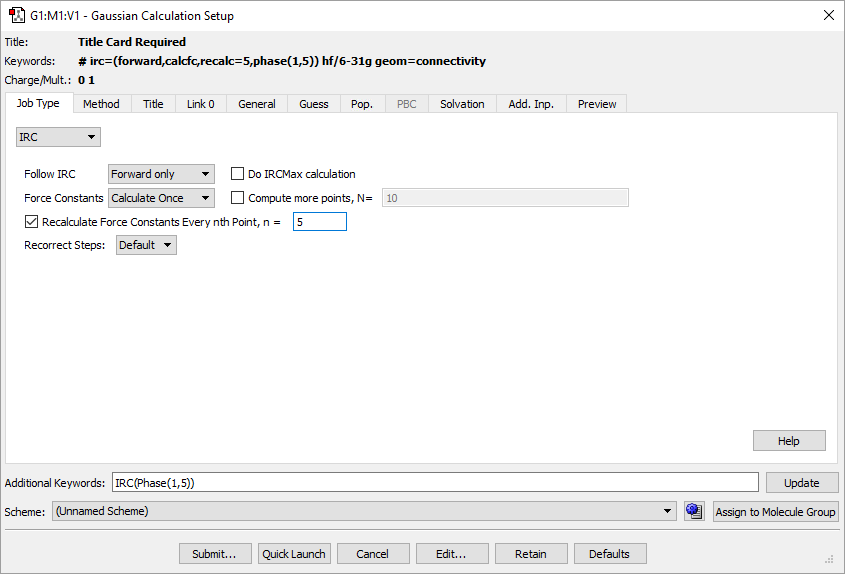
You can also use the Additional Keywords field to add any desired Gaussian keyword and/or option. GaussView will merge all options for the same keyword within the generated route section. Note that you must include the keyword with any options appearing in this field even if it already appears in the route section. For example, in the dialog above, we’ve added the Phase option to the IRC keyword, while other options has been generated with the various popup and checkbox selections.
The Additional Keywords field is designed only for adding keywords to the route section. Use the Edit button for creating complex input files.
See here for a list of equivalent G16 Keywords for Gaussian Calc. Setup selections.
The Method Panel¶
The Method panel specifies the quantum mechanical method to be used in a calculation. The default method is a ground state, closed shell Hartree-Fock calculation using the 3-21G basis set. This panel is illustrated below.
The Method Panel
The fields in the Method line specify the following items:
-
Whether the calculation is for a ground state (the default) or an excited state. If the latter, then the desired excited state method should be selected.
-
The theoretical method. For some choices, a fourth field will appear. It is used to select the specific method of the given type. For example, in the figure above, the method field is set to DFT, and the fourth field selects the B3LYP functional.
-
The wavefunction type (closed shell vs. open shell). The default is an unspecified type. The Restricted, Unrestricted, and Restricted-Open selections prepend R, U, and RO to the method keyword (respectively).
The Custom item on the second menu from the left—the theoretical method menu—can be used to specify a method other than those available via the menu(s). Place the desired method keyword in the text area that appears.
The Basis Set menus allow the selection of the basis set to be used in the calculation. Polarization functions and diffuse functions may be added to the basis set, using the corresponding menus in this line. Select the Custom item at the bottom of the basis set menu to select a basis set other than those that can be constructed via the controls in this area. You may enter any basis set keyword in the name field.
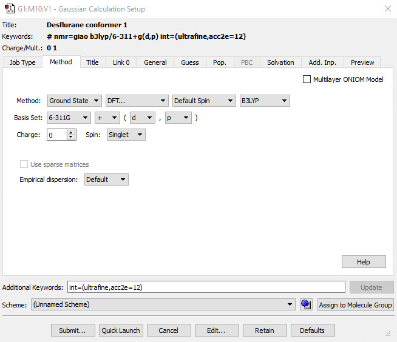
Entering a Custom Basis Set Keyword
The Charge and Spin fields specify the molecule’s charge and spin multiplicity. GaussView will select values for these fields based on the molecular structure. They may be modified as needed.
The Empirical dispersion popup allows you to specify that empirical dispersion should be included in a DFT calculation.
The If defined selection will use whatever dispersion treatment is available for the selected functional. You can also select a particular dispersion scheme via one of the menu options. Finally, the None option will prevent the use of empirical dispersion.
See here for a list of equivalent G16 Keywords for Gaussian Calc. Setup selections.
The Title Panel¶
The Title panel holds a field used for the Gaussian title section (designed to contain a brief description of the job). Type your description into the text box.
The Link 0 Panel¶
The Link 0 panel is used for entering Link 0 commands for the job. It has three subpanels.
The Link 0 Panel
This panel specifies a name for the checkpoint file, old checkpoint file and the read-write file, the amount of memory to use for this job, the number of shared memory processors, and/or the locations of Linda workers.
The Options Subpanel¶
You can specify the various settings via controls in the Options subpanel. The items on the various popup menus have the following meanings (the default choice is starred):
Item Link 0 Command Selections
Memory Limit %Mem
- Don't use: Do not include %Mem in the input file.
- value: Use the selected value (in megawords).
- Specify: Use the specified value and units (see the example above).
Shared Processors %NProcShared
- Don't use: Do not include %NProcShared in the input file.
- value: Use the selected number of processors.
- Specify: Use the value specified in the text field that appears with the option.
Chkpoint File %Chk
- Default name: Include %Chk with a name derived from the input filename.
- Specify: Use the name specified in the input field. Use the ... button to navigate to a file.
- Don't save: Do not include %Chk in the input file. See the note below.
OldChk File %OldChk
- No: Do not include %OldChk in the input file
- Default name: Include %OldChk with a name derived from the input filename.
- Specify: Use the name specified in the input field. Use the ... button to navigate to a file.
Read-write File %RW
- Don't save: Do not include %RWF in the input file.
- Default name: Include %RWF with a name derived from the input filename.
- Specify: Use the name specified in the input field. Use the ... button to navigate to a file.
Linda Workers %LindaWorkers
- Don't use: Do not include %LindaWorkers in the input file.
- Specify: Use the value specified in the text field.
Kill Job %KJob
No: Run job normally. Lnnn: Stop after the specified link completes. Specify: Enter the desired link into the text field.
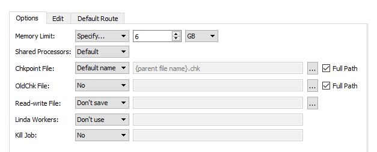
Note: If you remove the specification for the name and location of the checkpoint file, you will not be able to visualize output automatically from this job.
The Full Path checkboxes control whether an absolute path (checked) or relative path (unchecked) is placed into the %Chk or %OldChk Link 0 command. However, the full path will not appear in the Edit subpanel even when the box is checked. The ... buttons allow you to select a specific file by navigating it it.
The Edit Subpanel¶
The Edit subpanel allows you to edit the Link 0 commands directly.
The Link 0 Commands Editing Panel
The Default Route Subpanel¶
The Default Route subpanel shows the contents of the Default.Route file in use. The path to the file is indicated at the top of the panel.
Viewing the Default.Route File
This display is informational only; the file cannot be edited.
See here for a list of equivalent G16 Keywords for Gaussian Calc. Setup selections.
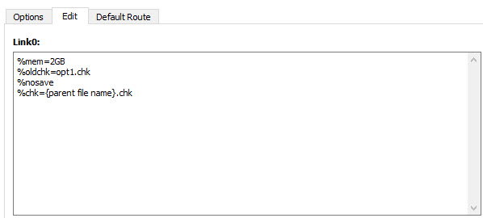
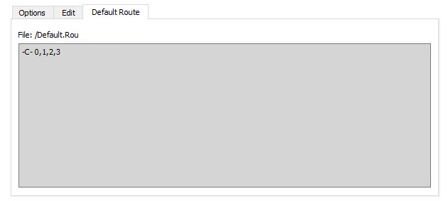
The General Panel¶
The General panel allows you to select commonly used general calculation options. It is illustrated below:
Gaussian Calculation Setup General Options Panel
This panel contains a set of commonly used options. The following table indicates the Gaussian keywords corresponding to the checkboxes:
| Option | Default | Keyword |
|---|---|---|
| Use Quadratically Convergent SCF | Off | SCF=QC |
| Use Modified Redundant Coordinates | On | Geom=ModRedundant |
| Ignore Symmetry | Off | NoSymm |
| Use Counterpoise | Off | Counterpoise |
| Write Cartesians | On | Cartesian coordinates are written (Off=Z-matrix coordinates) |
| Additional Print | Off | #P |
| Write Connectivity | On | Geom=Connectivity |
| Write PDB Data | On | ResNum, ResName, PDBName (in molecule specification) |
| Write Gaussian Fragment Data | On | Fragment (in molecule specification) |
| Use MaxDisk | Off | MaxDisk=values |
| Compute polarizabilities | Off | Polar |
| Compute optical rotations | Off | Polar=OptRot |
| Read Incident Light Freqs | No | CPHF=RdFreq |
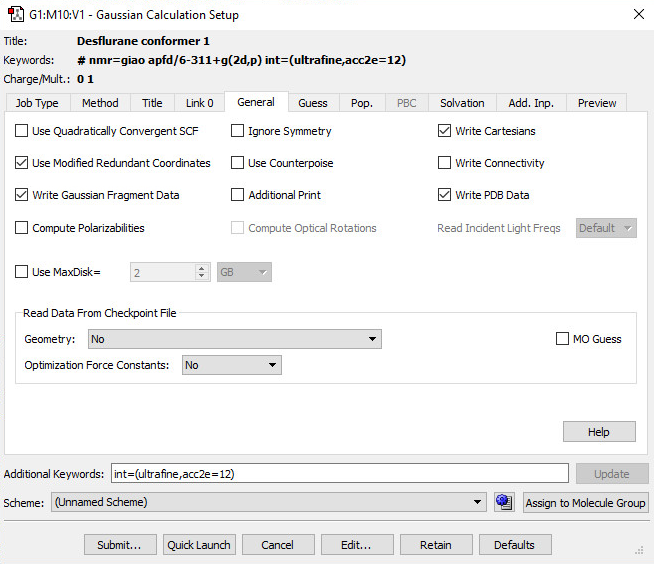
The Use Modified Redundant Coordinates item is enabled only if you have created redundant coordinates with the Redundant Coordinate Editor. If not, the item is ignored (despite its default value). Write Gaussian Fragment Data and Write PDB Data are enabled by default, but have no effect unless the corresponding items are defined.
The Write Connectivity option also includes the appropriate additional input section(s) in the Gaussian input file.
If Write Cartesians is unchecked, then a Z-matrix will be written to the input file instead of Cartesian coordinates.
Note: Consult the discussion of the SCF keyword in the Gaussian User’s Reference for recommendations for unusual/problem cases (SCF=QC is not always the best next choice).
Retrieving Items from a Checkpoint File¶
The items in the Read Data From Checkpoint File section control which items are retrieved from the checkpoint file from a previous job:
| Option | Default | Keyword |
|---|---|---|
| Geometry | No | Molecule Specification: Geom=Check |
| Title, Charge and ... | Molecule Specification: | Geom=AllCheck |
| Optimization Force Constants | No | Read Internal: Opt=ReadFC; Read Cartesian: Opt=RCFC |
| MO Guess | Off | Guess=Read |
See here for a list of equivalent G16 Keywords for Gaussian Calc. Setup selections.
The Guess Panel¶
The Guess panel contains settings related to the initial guess. It is illustrated below. Consult the discussion of the Guess keyword in the Gaussian User’s Reference for full details on these options.
The Guess Method popup specifies the type of initial guess to use. It has the following options:
-
Default: Uses the default Harris initial guess.
-
Core Hamiltonian: Uses the Gaussian 98 default initial guess (Guess=INDO). Generally, we do not recommend its use except when recommended by Gaussian, Inc. technical support staff.
-
Extended Huckel: Uses the Huckel guess (Guess=Huckel).
-
Read checkpoint file: Retrieves the initial guess from the checkpoint file (Guess=Read).
-
Read checkpoint if possible; otherwise generate: Check checkpoint file for the initial guess; generate if not present (Guess=TCheck).
-
Read input checkpoint file: Read the guess from the checkpoint file whose name is specified in the input stream (Guess=Input).
Gaussian Initial Guess Options
The checkboxes in this panel have the following meanings:
| Option | Default | Keyword |
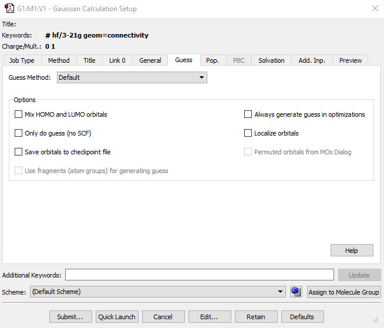
The Permuted orbitals for MOs Dialog is disabled unless you have specified an alternate orbital ordering with the MO Editor. If enabled, it is on by default.
The Use fragments (atom groups) for generating guess is disabled unless fragments have been defined using the Atom Group Editor. If enabled, it is unchecked by default. When this box is checked, fragment-specific charges and spin multiplicities are generated and placed into the route section. You can also modify them using the Atom Group Editor (see the example for antiferromagnetic coupling in a later section of this manual).
See here for a list of equivalent G16 Keywords for Gaussian Calc. Setup selections.
| Option | Default | Keyword |
|---|---|---|
| Mix HOMO & LUMO orbitals | Off | Guess=Mix |
| --- | --- | --- |
| Only do guess (no SCF) | Off | Guess=Only |
| Save orbitals to checkpoint file | Off | Guess=Save |
| Use fragments (atom groups) for generating guess | Off | Guess=Fragment |
| Always generate guess in optimizations | Off | Guess=Always |
| Localize orbitals | Off | Guess=Local |
| Permuted orbitals from MOs Dialog | On | Guess=Permute |
The Population Panel¶
The Population Panel
The Population Panel allows you to specify parameters for the population analysis (corresponding to options to the Population keyword).
Level of Output: This controls the level of detail produced in the output. This option produces a dropdown menu with Default (Print just the total atomic charges and orbital energies), Full (Same as the Regular population analysis, except that all orbitals are printed), Regular (The five highest occupied and five lowest virtual orbitals are printed, along with the density matrices and a full (orbital by orbital and atom by atom) Mulliken population analysis), Minimal (Total atomic charges and orbital energies are printed), and None (No orbitals are printed, and no population analysis is done).
At every geometry: When checked, this option will do a population analysis at every step during a geometry optimization instead of the default of the first and last steps.
The Merz-Kollman (ESP) Charges, Hirshfeld (CM5) charges, and Natural Transition Orbitals (NTOs) checkboxes request these types of electrostatic potential-derived charges.
The Biorthogonalize orbitals button will specify that the orbitals be biothogonalized when the calculation is run.
Perform NBO calc
-
No NBO: This option will not perform an NBO calculation. This is the default option.
-
Full NBO: This option will request a full Natural Bond Orbital analysis.
-
NPA only: This option just requests the Natural Population Analysis phase of NBO.
-
Full NBO (use NBO 6), NPA only (use NBO 6): These are the same as the options above, but use the separate NBO6 program via the external interface.
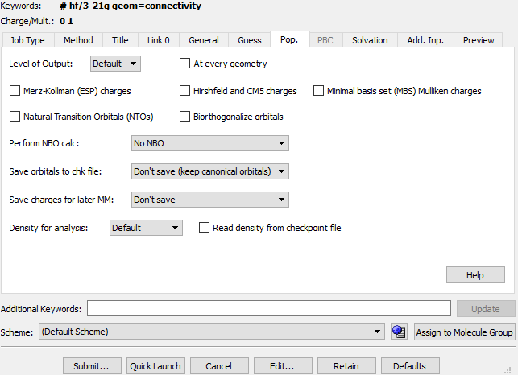
- Full NBO (use NBO 7), NPA only (use NBO 7): These are the same as the options above, but use the separate NBO7 program via the external interface.
Save orbitals to chk file: This section allows you to select what orbitals you save to the checkpoint file. The options Save Mulliken, Save ESP, Save NPA, and Save Hirshfeld (CM5) can be can be used to save the corresponding charges.
-
Don't save (keep canonical orbitals): This will not save any orbitals to the checkpoint file. This is the default option.
-
Save NLMOs: This will save natural localized molecular orbitals.
-
Save NBOs: This will save natural bond orbitals.
-
Save Mixture of NLMOs and NBOs: This will save NBOs for the occupied orbitals and the NLMOs for the unoccupied orbitals.
-
Save NTOs: This will save the generated orbitals in the checkpoint file, replacing the canonical ones if the density was read-in from there.
-
Save Biorthogonalized orbitals: This will save biorthogonalized orbitals in the checkpoint file over the canonical MOs.
Save charges for later MM: This menu offers options for saving the charges for later Molecular Mechanics calculations.
The Choose Density for Analysis section allows you select the Density used in the population analysis. The Select density for analysis drop-down menu specifies the density:
-
Default: This is the Hartree-Fock density for post-SCF methods; the DFT density for DFT jobs, and the CASSCF density for CAS jobs
-
Current: Use the density matrix for the current method.
-
SCF: Use the SCF density.
-
MP2: Use the generalized density corresponding to the second-order energy.
-
Transition: Use the CIS transition density between state M and state N. These states can be specified in the corresponding fields. M defaults to 0, which corresponds to the ground state.
-
All Transitions: Use all available CIS transition densities.
-
CI: Use the generalized density corresponding to the CI energy.
-
QCI/CC: Use the generalized density corresponding to the coupled cluster/ACI energy.
Read density from checkpoint file: Enabling this option will ensure GaussView reads the density from the checkpoint file and apply it to the calculation.
See here for a list of equivalent G16 Keywords for Gaussian Calc. Setup selections.
The Solvation Panel¶
The Solvation panel allows you to specify that the calculation is to be performed in solution rather than in the gas phase. It is illustrated below.
The Solvation Panel
The Model field allows you to specify a specific solvation model (the default is IEFPCM). Some solvation models may present different/additional fields for their required parameters.
You can specify the solvent by selecting it from the corresponding popup menu. Use the Other selection to select a solvent other than those on the list:
Specifying a Defined Solvent not in the Menu
Only defined solvent keywords should be specified in this way. It is not possible to define additional solvents for the IEFPCM method in this way. See the Gaussian User’s Reference for the list of defined solvents.
You may use the Read additional input box to generate the SCRF=Read option; additional input may be entered via the Gaussian Calculation Setup dialog?’s Add. Inp. panel.
See here for a list of equivalent G16 Keywords for Gaussian Calc. Setup selections.
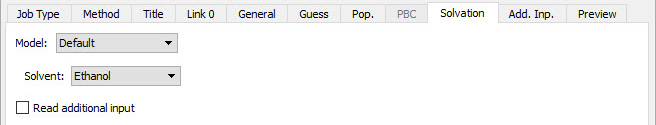
The Gaussian Calculation Setup PBC Panel¶
The PBC panel is used to specify options to the Gaussian PBC keyword. Checking the Use PBC box causes the translation vectors to be added to the molecule specification. This is the default when a unit cell has been defined with the Crystal Editor. The panel is disabled for non-periodic systems.
The PBC Panel
The Use PBC checkbox causes the translation vectors to be placed in the molecule specification. After you select the option above, an additional field for specifying the number of K-points will appear.
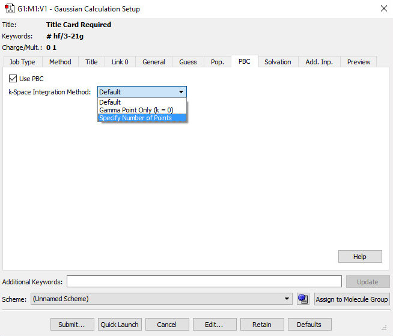
The Additional Input Panel¶
Additional Input Panel This example provides the input required for the CPHF=RdFreq option.
The penultimate panel in the Gaussian Calculation Setup dialog is labeled Add. Inp. It may be used to enter any additional input section(s) required by the calculation you plan to run. This input will be written to the Gaussian input file, provided that Write Additional Input is checked. Any additional input present in input files that you open will also appear in this panel.
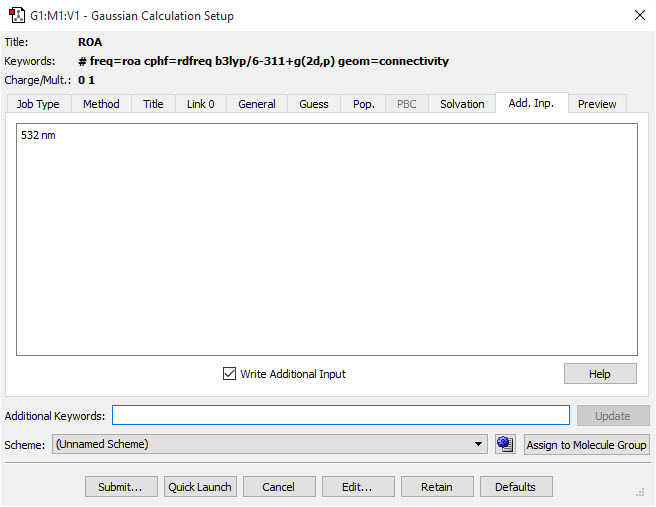
Gaussian Calculation Setup Preview Panel¶
This panel presents a preview of the Gaussian input file that GaussView will create when a save or job submit operation is requested:
Gaussian Calculation Setup Preview Panel
The text is read-only. Use the Edit button to modify it directly.
The Runtestrt button runs the testrt utility to verify the job's route section. The utility's output will appear in a separate window.
Gaussian Context Menu
The context menu for this panel's display area contains the following items:
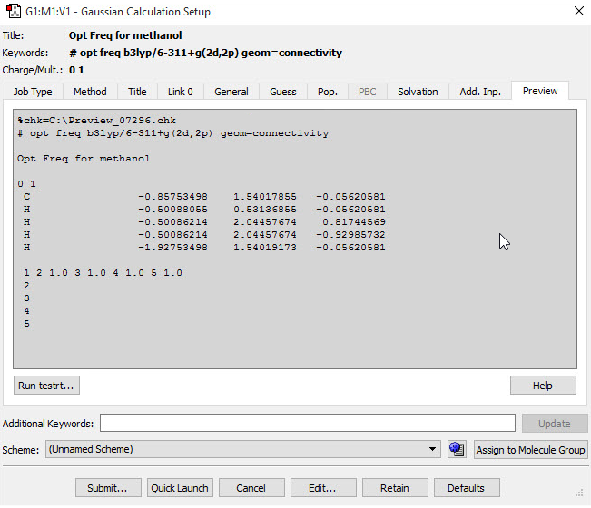
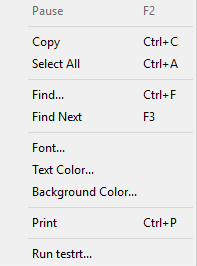
-
Copy: Copy selected text to the clipboard.
-
Select All: Select all text.
-
Find and Find Next: Search the generated input file.
-
Font, Text Color and Background Color: Customize the display font and colors.
-
Print: Print the generated input file.
-
Help: Display help for this panel.
-
Run testrt: Equivalent to the Runtestrt button described above.
Special Considerations for Various Gaussian Job Types¶
This section summarizes information about setting up various Gaussian job types for which some special steps are required.
Transition Structure Optimizations: Opt=QST2 and Opt=QST3¶
Gaussian STQN-based transition structure optimizations require two or three structures as input. To set up these jobs, you must create a molecule group containing the required number of structures. Once you have done so, the TS (QST2) and TS (QST3) options will be enabled in the Optimize to a field for the Optimization job type in the Job panel of the Gaussian Calculation Setup dialog.
If you plan on running an Opt=QST3 job, then the transition structure initial guess is assumed to be molecule 3 unless you specify a different structure on the Job Type panel.
Verifying and Specifying Atom Equivalences: In most cases, GaussView will automatically identify the corresponding atoms in the multiple structures for these transition state optimizations. However, you can verify this using the Connection Editor, accessed via the Connection Editor button on the toolbar or the Tools=>Connection Editor menu item. Connection Editor details here.
Warning: The atoms in the various molecules used for these two job types must be identical. If GaussView detects any ordering discrepancy, the option will be disabled on the Optimize to a dropdown.
Calculations on Polymers, Surfaces, and Crystals¶
You can set up jobs for Gaussian’s Periodic Boundary Conditions facility using the Crystal Editor (reached via the Crystal Editor button or the Tools=>PBC menu path). Once you have defined a unit cell, GaussView automatically sets up PBC jobs for this structure by including the translation vectors within the molecule specification. This is indicated by the enabling of the PBC panel in the Gaussian Calculation Setup dialog and the checked Use PBC item. Note that, for normal cases, you do not need to access this panel at all and can proceed directly to setting up Gaussian input in the normal manner.
Multi-Layer ONIOM Calculations¶
GaussView contains several features for setting up ONIOM calculations.
- Assigning Atoms to Layers: The Layer Editor allows you to graphically assign atoms to various ONIOM layers. It is accessed via the toolbar’s Select Layer button or via the Tools=>Select Layer menu item.
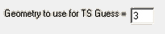
-
Assigning Molecular Mechanics Atoms Types: GaussView will assign Molecular Mechanics atoms types for UFF, Dreiding, and Amber (including Amber charges) to all atoms in the molecule automatically. You can view and modify these using the Atom List Editor (reached via the Atom List Editor button on the toolbar or the Tools=>Atom List menu path).
-
Defining Link Atoms: GaussView will automatically assign minimal link atom information for the appropriate atoms in an ONIOM calculation. However, all link atoms are always handled in the same way, and they may require modification for your purposes. Link atoms generated by GaussView are always hydrogens (using the H_ UFF and Dreiding atom types and the HR Amber atom type, where R is the element of the linked-to atom). The only other link atom parameter that is included is the linked-to atom (the atom in the higher layer to which the current atom is bonded); all other parameters are left blank. The Atom List Editor is often a convenient way to examine and modify link atoms for ONIOM calculations. You can use the ONIOM Layers button to view and modify link atoms easily.
-
Specifying the Model Chemistry for Each Layer: Once you have prepared the structure and specified all necessary parameters, you can set up an ONIOM calculation via the Method panel of the Gaussian Calculation Setup dialog. The Multilayer ONIOM Model checkbox indicates that this will be an ONIOM calculation.
Specifying CASSCF Active Spaces Using Guess=Permute¶
GaussView can make it easy to specify CASSCF active space. The MOs dialog allows you to generate, view, select, and reorder the starting orbitals. It is reached with the Tools=>MOs menu path and via the MO Editor button on the toolbar. More details here.
Modifying Redundant Internal Coordinates (Geom=ModRedundant)¶
You can specify additions and other modifications to redundant internal coordinates for geometry optimizations and other jobs by using the Redundant Coordinate Editor, reached via the Redundant Coordinate Editor button on the toolbar or the Edit=>Redundant Coordinates menu path.
Freezing Atoms During Geometry Optimizations¶
The Atom Group Editor can be used to specify atoms whose positions are to be held fixed during a geometry optimization via its Freeze Atoms group class. This class is defined with four groups by default, corresponding to unfrozen atoms, frozen atoms, and the first two ONIOM frozen rigid blocks (freeze settings of -2 and -3; see the discussion of the Geom keyword in the Gaussian User’s Reference for full details on specifying frozen atoms and rigid blocks for ONIOM calculations). In order to hold specific atoms fixed during a geometry optimizations, add them to the Freeze (Yes) group.
Selecting Normal Modes for Frequency Calculations (Freq=SelectNormalModes)¶
You can use the Atom Group Editor to select atoms for which normal mode analysis is conducted (see the Gaussian User’s Reference for details). Placing the desired atoms into the Select Normal Modes (Yes) group will cause them to be entered into the Atoms field corresponding to Select Normal Modes in the Gaussian Calculation Setup’s Job Type panel for Frequency jobs. You can modify this list manually as needed, but doing so will have no effect on the definition of the groups in the Atom Group Editor’s Select Normal Modes group class.
Setting up Scan Calculations¶
Different procedures are required for rigid scans and relaxed scans.
Relaxed Scans¶
When setting up a relaxed scan calculation, you first must specify coordinates to be scanned in the Redundant Coordinate Editor.
For this example, we will be scanning the bond between two benzene rings as they rotate about each other. The initial bond is 90 degrees, and we wish to take 9 steps of 10 degrees each. First, click the Add button, and then select Dihedral from the dropdown menu. Change the second dropdown to Scan Coordinate. Now click on the dihedral you wish to scan in the View window. The Coordinate: fields in the Redundant Coordinate Editor dialog will fill in with the atoms you have selected. Two new input fields will appear allowing you to specify the number of steps and each step size in the scan. For our example, we fill in 9 steps of 10 degrees.
Adding a Scan Variable with the Redundant Coordinate Editor
When you open the Gaussian Calculation Setup’s Job Type panel, Scan, Relaxed (Redundant Coord) is already filled in, meaning the calculation will run with the settings you specified in the Redundant Coordinate Editor. In the Gaussian Calculation Setup’s Preview panel, which is shown below, you can see the input created by the Redundant Coordinate Editor at the end of the input.
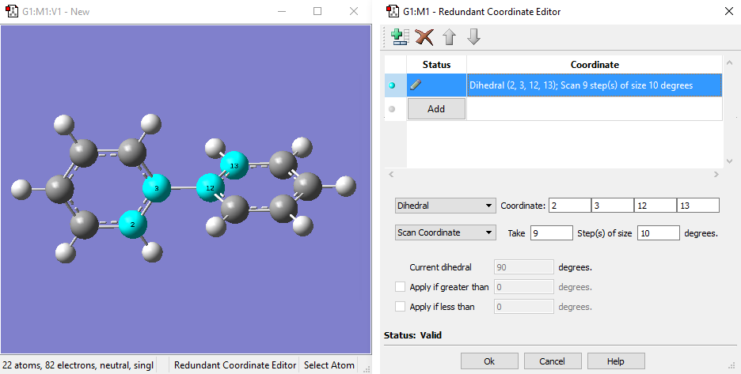
Previewing the Relaxed PES Scan Calculation Input
Rigid Scans¶
To set up a rigid scan calculation, we use the Atom List Editor to identify the structural parameters to be scanned. For this example, we open the Atom List Editor and then click on the Z and O buttons to display the Z-Matrix and Optimization Flags columns. We want to scan the C2-C3-C12-C13 dihedral angle. We locate this in row 13 of the table. In the Opt 3 column for this row, we change Yes to Rxn/Scan.
Adding a Scan Variable for a Rigid Scan with the Atom List Editor
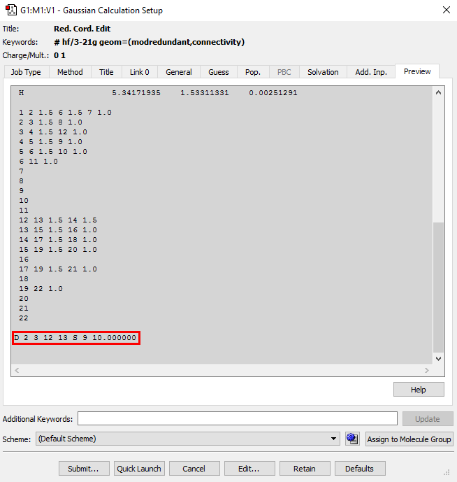
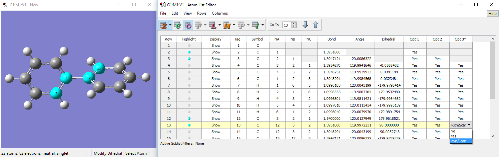
We close the Atom List Editor and then open the Gaussian Calculation Setup’s Job Type panel and select Scan, and Rigid for the scan type. The Scan Coordinate 1 subpanel shows the scan coordinate. Here you can specify the number of steps, the step size and/or end value. Changing any value causes the other boxes to automatically update. For example, by changing the number of steps and the desired end value, GaussView will automatically calculate the step size. In our example, we specified 9 steps of 10 degrees. The Preview panel dialog on the right shows the scan input included within the molecule specification.
Input Setup for a Rigid Scan
Calculating NMR Spin-Spin Coupling: NMR=(SpinSpin,ReadAtoms)
When you select an NMR calculation in the Gaussian Calculation Setup’s Job Type panel, the compute spin-spin couplings popup appears. The atom list in the parentheses that appears to the right of the popup when either of the yes options are selected corresponds to the members of the NMR Spin-Spin (Yes) group, as defined in the Atom Group Editor. By default, all atoms are placed into this group, and the list of atoms reads all atoms. A specific group of atoms appears in this item when the NMR Spin-Spin (No) group contains at least one atom.
Specifying Fragment-Specific Charges and Spin Multiplicities¶
You can specify individual charge and spin multiplicity values for each fragment defined via the Atom Group Editor. This facility is useful for setting up fragment guess jobs (Guess=Fragment) for modeling antiferromagnetic coupling, counterpoise calculations (Counterpoise) for computing counterpoise corrections and basis set superposition errors, and the like. The image below illustrates setting up a system for modeling antiferromagnetic coupling effects.
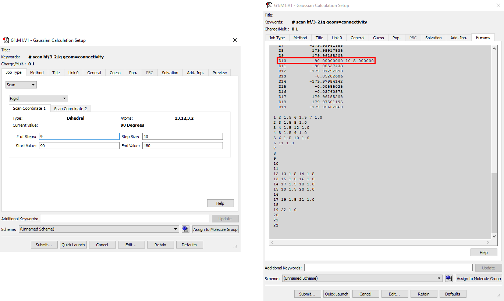
Specifying Per-Fragment Charge and Spin
Antiferromagnetic coupling is an effect that is important for molecules with high spin multiplicity. This Fe2Cl6 compound is a simple example. Here, we have defined three fragments. Each iron atom is in its own fragment, and the six chlorine atoms are in a third fragment. The two iron fragments are each assigned a charge of +3, and both are defined as sextets with opposite spin (i.e., spin multiplicities of 6 and -6). The fragment containing the chlorine atoms is defined as a singlet with a -6 charge. These values will be placed into the route section of the Gaussian job set up in GaussView.
The Gaussian Calculation Setup’s General panel contains features relevant to these two calculation types: Write Gaussian Fragment Data (for both types) and Use Counterpoise (for Counterpoise calculations). In addition, the Guess panel has two items useful for the first job step of a fragment guess job: Only do Guess (no SCF) and Use fragments (atom groups) for generating guess, corresponding to Guess=Only and Guess=Fragment (respectively). Typically, such a job would be followed by a second job to compute the energy including the antiferromagnetic coupling: Guess=Read Geom=AllCheck Stable=Opt.
Setting Up Excited State Calculations¶
In the first selection menu of the method section, you will see various options signifying the electronic state. The first option is Ground State, while all other selections represent excited states.
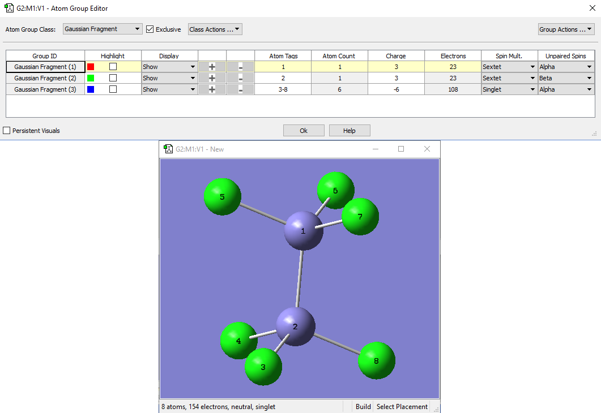
Selecting the Electronic State from the Method Section
By selecting any of the excited state options, the States menu will appear. This menu allows for you to indicate which kinds of states to solve for. The Solve for More States and the State of Interest options will also appear. The Solve for More States will enable you to choose the number of states you want to solve for. The State of Interest selection allows you to choose the state for which properties will be predicted. Additionally, it is important to note that the excited state ZINDO does not use the Basis Set field.
Solving for States Using Excited Electronic States
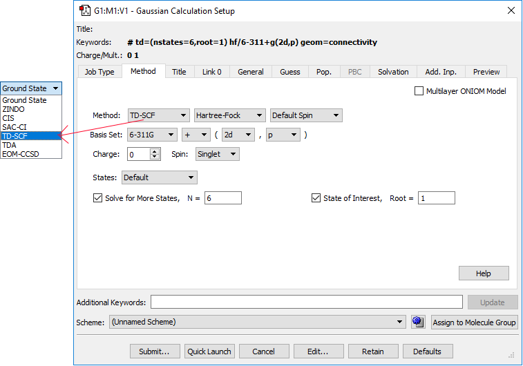
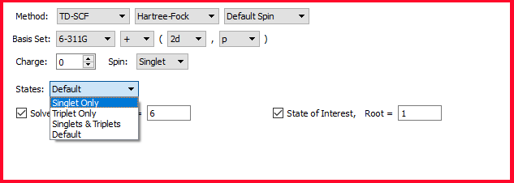
How To: Run Gaussian Calculations¶
This page discusses setting up Gaussian calculations with GaussView. It deals only with the mechanics of doing so. Consult the Gaussian User’s Reference for detailed information about all Gaussian keywords and options.
Submitting a Gaussian Calculation¶
Clicking the Submit button at the bottom of the Gaussian Calculation Setup dialog begins the submission process. If needed, a dialog appears that allows you to save an input file. This is followed by a job submission confirmation dialog. which has the following form by default:
Job Submission Confirmation Dialog
Clicking Yes will submit the job to Gaussian. The checkbox controls whether you are notified when the job completes. The format of this dialog varies when the SC Job Manager is in use (more info here).
Once the Gaussian calculation has completed, a dialog like the one below will appear on Windows systems:
Selecting Yes closes the Gaussian 16W window.
On all systems, you are given the option of opening either the checkpoint file or the log file of the job you have just run. This prompt is displayed in the dialog below:
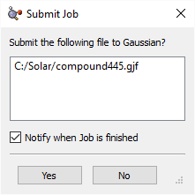
Selecting a Results File to Open
Make sure that the box in the first column is checked for the file you wish to open. The default is the checkpoint file. Be sure to open this type of file if you plan to visualize molecular orbitals or other surfaces.
The Quick Launch Feature¶
The Quick Launch feature greatly simplifies running Gaussian calculations. A job can be launched using the Quick Launch toolbar button, the Quick Launch button in the Gaussian Calculation Setup dialog, or the Calculate=>Gaussian Quick Launch menu path. Clicking on the button in the Gaussian Calculation Setup dialog or on the portion of the toolbar icon to the left of the small arrow will immediately launch a Gaussian job using the current calculation scheme and temporary files.
The toolbar icon arrow and the Calculate menu item both lead to a submenu. Its Temp File item will also result in a job started from a temporary input file. The Save File option will prompt you to save an input file and submit that file as a Gaussian job afterwards. The Save and Edit File option will prompt you to save an input file and then open that file in the external editor. Finally, the Current Input File menu item will run a calculation using the data present in the currently open input file.
When you start a new calculation using Quick Launch, a new View window is opened corresponding to it. While the job is running, a text message identifying the job, a stop button, and a stream output file button are placed in the status bar of the View window. Once the job finishes successfully, the results file is opened automatically. When more than one results file is produced by a calculation—e.g., both a log file and a checkpoint file are created—then you will be prompted to select the file to open.
You can save the files generated from a Quick Launch operation to temporary files using the File=>Save Temp Files menu item. This item replaces the usual Related Files option under these circumstances.
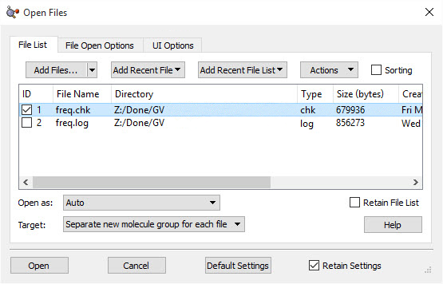
Controlling Running Calculations¶
GaussView has two facilities for managing the current job. Which one is active is controlled by the Job Setup Preferences. When available, the Use SC Job Manager item selects the internal SC Job Manager facility. The other choices all use the legacy Current Jobs facility. Additional information:
-
Current Jobs facility
-
SC Job Manager
Specifying How the Gaussian Program is Executed¶
The Job Setup Preferences dialog allows you to examine and customize how Gaussian and its utilities are launched from within GaussView.
Viewing and Controlling Gaussian Jobs¶
The Calculate=>Current Jobs menu path opens the Job Manager dialog (shown below); the Current Jobs button on the toolbar performs the same function:
. Note that GaussView 6 also includes a more sophisticated facility for managing calculations: the SC Job Manager.
This window displays all the jobs started by GaussView that are currently running. Note that only jobs started during the current session of GaussView are displayed. Examples of jobs that may be displayed are Gaussian jobs submitted from the Gaussian dialog box, Gaussian input file edit sessions launched from GaussView, CubeGen processes for building surfaces for display, FreqChk processes to generate vibrational analysis data, and/or processes from other Gaussian utilities.
The Current Jobs Dialog
This dialog allows you to view and control Gaussian jobs as well as jobs running Gaussian utilities like CubeGen. You can terminate a job, using the Kill button.
Clicking on the Jobs Log button displays the current GaussView job log containing system messages associated with the execution of GaussView external processes. The Clear button in the resulting window removes old jobs from the job list, and the Close button dismisses the job list window.
Note that the Jobs Log button does not display the log file associated with a running Gaussian job. The latter is accomplished by the Stream Output File button for Gaussian calculations. This can also be accessed by the Results=> Stream Output File menu path. Note that selecting this button for job types (e.g., cube generation jobs) will display whatever file GaussView can find that is associated with the job (often the Gaussian input file).
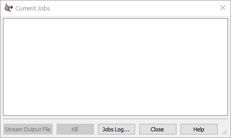
Defining Calculation Schemes¶
Schemes are named sets of calculation keywords and options, and you can define and save as many different ones as you wish. You can view the calculation scheme in effect at the bottom of the Gaussian Calculation Setup dialog, in the scheme popup in the toolbar, and in the Calculate=>Gaussian Calculation Scheme submenu. You can apply a scheme to the current molecule using any of these controls as well.
When you open a new molecule from a file, the scheme will be set to the scheme that matches its settings (if any) or to Unnamed Scheme.
For new molecules, the Default scheme is initially applied. Modifying the Gaussian Setup preference as described here has the effect of modifying the Gaussian calculation scheme named Default; although, this scheme may also be edited in this dialog.
You can view and modify the properties of the various defined schemes using the Schemes button or by selecting More Schemes from any scheme list. The resulting dialog appears below:
Viewing and Modifying Calculation Schemes
This dialog shows four schemes organized into two groups. The editable fields in this dialog are the following:
-
Name: The scheme name, which will appear in the Schemes menu.
-
Keywords: The keyword section for the Gaussian job.
-
Link 0: The Link 0 section for the Gaussian job. Multiple lines should be separated with spaces.
-
Title: Job title.
-
Additional Input: Additional job input sections. The ORD scheme above includes the incident light frequencies for the CPHF=RdFreq option. When you edit this cell, another, larger window will open to allow for multiple input lines.
Any field within a scheme can be edited by clicking on it. Note that neither the Default scheme nor the Main group may be renamed or deleted.
Right clicking on a scheme produces a context menu:
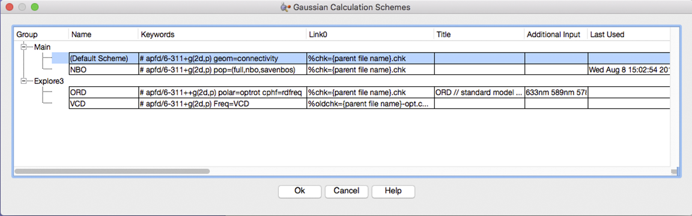
Calculation Schemes Context Menu
The items in this menu have the following meanings:
-
New Group: Add a new scheme group.
-
New Scheme: Add a new scheme to the current scheme group.
-
Open File: Opens a previously saved scheme group.
-
Save File: Saves the current scheme group in a location of your choice.
-
Edit Cell: Allows text editing of the currently selected cell in the scheme group.
-
Cut, Copy, Paste, Delete: Simple text editing, same function as any other word-editing software.
-
Font, Text Color, Background Color: Allows changing of the font, text color, and background color of the scheme group.
-
Show Grid: Displays the grid in the scheme group.
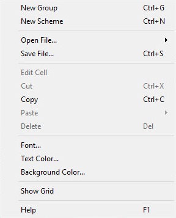
Calculation Summary¶
The Results=>Summary menu item displays summary data about the results of the Gaussian calculation (available when a Gaussian log file or checkpoint file is opened). It is displayed in the figure below.
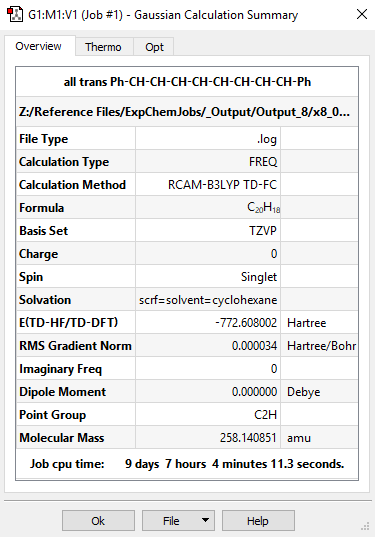
Summary of a Gaussian Calculation These windows summarize the results of a CAM-B3LYP/TZVP TD Opt Freq calculation in the solvent cyclohexane.
The window on the left displays the Overview tab of the job. It displays essential information about the calculation itself as well as the predicted total energy, dipole moment, point group, and, in the case of a frequency calculation, number of imaginary frequencies. The second tab, illustrated in the window on the right in the figure above, is the Thermo tab, which contains the thermochemistry values predicted by the calculation (if available). The contents of the third tab depend on the specific type of calculation that was run.
The Results=>View File menu item and the View File button on the GaussView toolbar and the File=>View using Text Editor dropdown on the Calculation Summary dialog can all be used to open the Gaussian log file associated with the Gaussian calculation (if available).
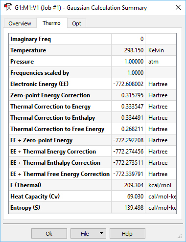
The Results=>Stream Output File menu item and the Stream Output button can both be used to view the Gaussian log file associated with the current Gaussian calculation continuously as the job runs.
The Molecule Group Table¶
The Molecule Group Table dialog is used to view and edit information about opened molecules. This is useful for creating tables of results:
The Molecule Group Table dialog This window allows the user to arrange the molecules in the group by a variety of criteria and also allows for 3D navigation of individual molecules. Click on a column header to sort the table.
The Options drop-down menu has the following selections by default:
-
Constrain Row Heights to be Equal: When enabled, this option makes all of the rows equal height wise.
-
Show Name Column: When enabled, the name for the item will be visible in the table. The name can be edited, and it defaults to the file name.
-
Show 3D View Column: When enabled, a 3D view of the molecule will be displayed in the table.
-
Show Source Column: When enabled, the source of the file will be displayed in the table.
-
Show Symbol Column: When enabled, a column for entering symbol text will be included.
-
Show Comments Column: When enabled, a column for entering comments will be visible.
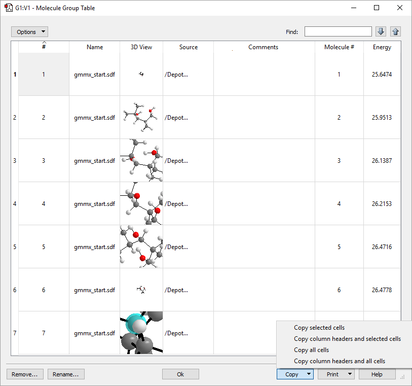
Other Show selections will appear on this menu, depending on the type of results file opened (e.g., the Molecule # column for the GMMX results set shown above). Those listed above are always present.
The Find box in the upper right allows you to search the table by entering text into the text box. The up and down arrows will cycle through the matching items.
Buttons at the bottom of the dialog allows you to modify the contents of the table and to print it.
The Remove button removes the selected molecule from the group table.
The Rename button enables the editing of the name of the selected molecule via the dialog below:
The Copy drop-down menu (shown in the example dialog above) allows you to copy data between cells and rows. It has the following options:
-
Copy selected cells: This option copies only the cells you have selected to the clipboard.
-
Copy column headers and selected cells: This option copies all of the headers and cells that you have selected to the clipboard.
-
Copy all cells: This option copies all of the cells in the table to the clipboard.
-
Copy column headers and all cells: This option copies all of the data in the table to the clipboard.
The Print drop-down menu has the following options:
-
Page Setup: This option opens the operating system’s print setup dialog.
-
Print Preview selected row: This option opens the operating system’s print preview dialog, displaying only the currently selected row.
-
Print selected row: This option opens the operating system’s printer selection dialog in order to print the currently selected row.
-
Print Preview all rows: This option opens the operating system’s print preview dialog, displaying all rows.
-
Print all rows: This option opens the operating system’s printer selection dialog in order to print all rows.
The Ok button will close the Molecule Group Table dialog.
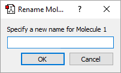
Viewing the Input File for the Current Results¶
Pressing the View File button or selecting the Results=>View File menu item opens the file which was opened for the current model, provided that the molecule has not been structurally modified in any way since it was opened. In the case of binary input files like Gaussian checkpoint files, the displayed file will be the one that was created automatically by GaussView with the FormChk utility.
Optimization Plot¶
For Optimization calculations, GaussView plots the total energy and the root-mean-square gradient for each optimization point in the calculation. It is accessed via Results=>Optimization.
More information about the functionality, Working with Plots is here.
IRC Plot¶
For IRC calculations, GaussView plots the intrinsic reaction coordinate vs. the predicted energy for each point in the computed IRC.
More information about Working with Plots here.